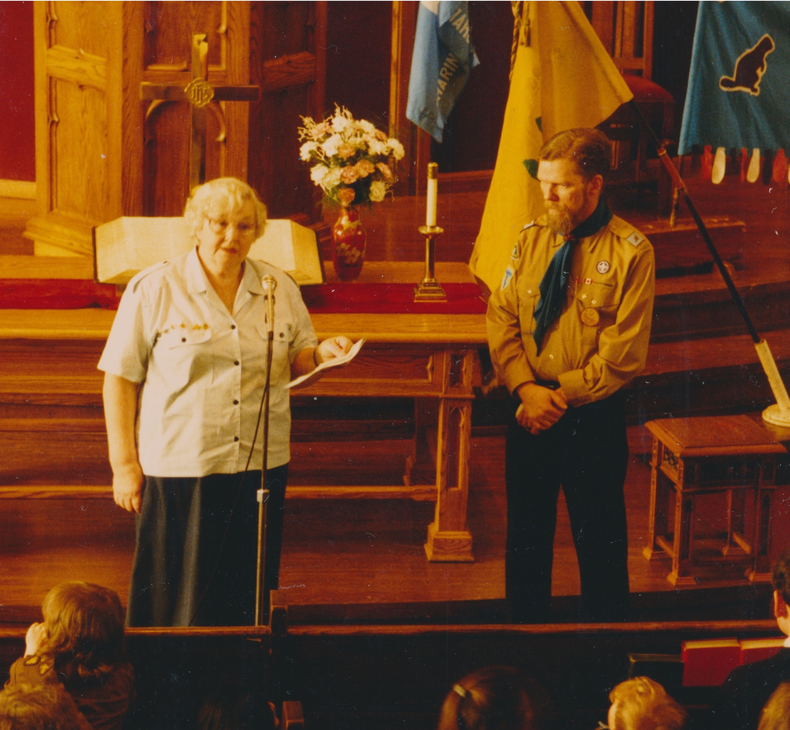

-1-MasterItem.svg)
Stories of Westminster United Church & its People / Page
234
Table
of Contents
Many Things
The interesting point about this shift was that Churches like
Westminster embraced the secular alternatives, made room for
them in their building, held Sunday Worship Service “Parades' (see
pictures of Guides with Mary Yanke involved) and, in a general
sense, imbued them with a Christian veneer. In the video interview
with Mary in this article she sees Guides and Brownies as more
than just an activity program. The same could be said of our
Scouting and Cub programs under the leadership of Bill Taylor and
Jim Palmquist.
But now we have no “parades” during church services, “Church”
has no place in their activities and our only “connect” with these
groups is providing building space for their weekly meetings. Like
our general society today secularization has become the norm in youth activities
as it is in the
activities of adults.
Our thanks to Nathan Poole who photographed the interview with Mary Yanke and to
Curt Hull
who adapted the video for internet access. Thanks to Jim Palmquist who supplied
us with the still
pictures. Thank you Mary, Jim and Bill for your years of reaching out to the
youth of this community.
Reaching way back thanks to Mrs. Freeman and people like Dorothy Dick who cared about our CGIT.
And thanks to the many other people who have been involved in these programs,
whose names I
don’t have, but whose labour was so evident.
Above: Mary Yanke and —
